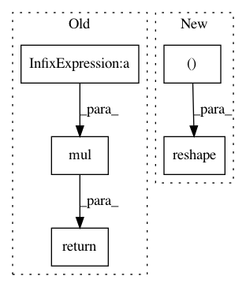

1ffc5ad914da39a369337c1606a8ba788dbf9055,geomstats/geometry/grassmannian.py,Grassmannian,random_uniform,#Grassmannian#Any#,55
Before Change
basis_change = SpecialOrthogonal(self.n).random_uniform(n_samples)
projector = from_vector_to_diagonal_matrix(
gs.array([1.] * self.k + [0.] * (self.n - self.k)))
return Matrices.mul(
basis_change, projector, GeneralLinear.inverse(basis_change))
def belongs(self, point, tolerance=TOLERANCE):
Check if the point belongs to the manifold.
After Change
New York: Springer-Verlag. 2003, 10.1007/978-0-387-21540-2
points = gs.random.normal(size=n_samples * self.k * self. n)
points = gs.reshape(points, (n_samples, self.n, self.k))
full_rank = Matrices.mul(Matrices.transpose(points), points)
projector = Matrices.mul(
points,
GeneralLinear.inverse(full_rank),
In pattern: SUPERPATTERN
Frequency: 3
Non-data size: 5
Instances
Project Name: geomstats/geomstats
Commit Name: 1ffc5ad914da39a369337c1606a8ba788dbf9055
Time: 2020-08-25
Author: nicolas.guigui@inria.fr
File Name: geomstats/geometry/grassmannian.py
Class Name: Grassmannian
Method Name: random_uniform
Project Name: commonsense/conceptnet5
Commit Name: cbe2758007e312c168aef30328693027b6a4b7e9
Time: 2018-06-06
Author: rbeaudoin@luminoso.com
File Name: conceptnet5/vectors/debias.py
Class Name:
Method Name: de_bias_category
Project Name: commonsense/conceptnet5
Commit Name: cbe2758007e312c168aef30328693027b6a4b7e9
Time: 2018-06-06
Author: rbeaudoin@luminoso.com
File Name: conceptnet5/vectors/debias.py
Class Name:
Method Name: de_bias_binary